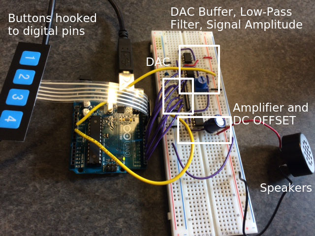

About
The first project was to build an audio synthesizer. Our team is much more interested in software than hardware, so we decided to find a simple circuit and build it quickly so that we could start writing code. We used an instructables circuit which can be found here. We built the circuit in the first two weeks of the project, and then began trying to play notes using the audio synthesizer.
Different Paths We Took
We started by playing a sine wave, sawtooth and square wave. We wanted to change the note’s frequency, which we achieved by modifying the match register. Once we knew that we could play different notes, we decided to try and play several notes in sequence to form a tune. To add more interactivity to our project and to add more technical complexity, we later decided to add buttons to the circuit and to use them like an instrument to play notes.
Playing One Note: Circuit Building
With an arduino, our first goal was to generate sound and output analog voltages. In particular, we followed the instructables directions to create analog waves from the digital pins of the arduino. The general idea is to use the arduino to make a digital synthesizer and be able to make sawtooth and sine waveshapes. The circuit is comprised of a digital to analog converter, due to the fact that arduino only has digital capabilities. The DAC, in particular, takes the numbers and bytes and converts them into oscillating voltages that we measured with an oscilloscope to verify. The R2R ladder (as shown in the circuit picture) takes the incoming digital bits and sums them to produce a voltage. Our particular R2R ladder is 8 bits, and can produce 256 total different voltages from 0 to 5V.
Next, there is a DAC buffer, low-pass filter and signal amplitude which protect the signal coming out of the DAC without distorting it heavily. The signal is smoothed out to reduce noise, and then a signal amplitude is added to control the amplitude using a potentiometer. Lastly, the amplifier increases the current of the signal so that a load can be driven, and then a offset makes sureit is oscillating around 0V.
Picture of the circuit:

We created an array with values for a sine wave and sawtooth wave. The waves are passed out using digital pins of the arduino with a timer set to have an interrupt that produces the different frequencies that represent the notes.
The code for generating one note from our circuit:
//create array with the values for the sine wave and sawtooth wave
int waves [2][120] = {{127, 134, 142, 150, 158, 166, 173, 181, 188, 195, 201, 207, 213, 219, 224, 229, 234, 238, 241, 245, 247, 250, 251, 252, 253, 254, 253, 252, 251, 250, 247, 245, 241, 238, 234, 229, 224, 219, 213, 207, 201, 195, 188, 181, 173, 166, 158, 150, 142, 134, 127, 119, 111, 103, 95, 87, 80, 72, 65, 58, 52, 46, 40, 34, 29, 24, 19, 15, 12, 8, 6, 3, 2, 1, 0, 0, 0, 1, 2, 3, 6, 8, 12, 15, 19, 24, 29, 34, 40, 46, 52, 58, 65, 72, 80, 87, 95, 103, 111, 119}, {0x22, 0x44, 0x66, 0x88, 0xaa, 0xcc, 0xee, 0x110, 0x132, 0x154,
0x176, 0x198, 0x1ba, 0x1dc, 0x1fe, 0x220, 0x242, 0x264, 0x286, 0x2a8,
0x2ca, 0x2ec, 0x30e, 0x330, 0x352, 0x374, 0x396, 0x3b8, 0x3da, 0x3fc,
0x41e, 0x440, 0x462, 0x484, 0x4a6, 0x4c8, 0x4ea, 0x50c, 0x52e, 0x550,
0x572, 0x594, 0x5b6, 0x5d8, 0x5fa, 0x61c, 0x63e, 0x660, 0x682, 0x6a4,
0x6c6, 0x6e8, 0x70a, 0x72c, 0x74e, 0x770, 0x792, 0x7b4, 0x7d6, 0x7f8,
0x81a, 0x83c, 0x85e, 0x880, 0x8a2, 0x8c4, 0x8e6, 0x908, 0x92a, 0x94c,
0x96e, 0x990, 0x9b2, 0x9d4, 0x9f6, 0xa18, 0xa3a, 0xa5c, 0xa7e, 0xaa0,
0xac2, 0xae4, 0xb06, 0xb28, 0xb4a, 0xb6c, 0xb8e, 0xbb0, 0xbd2, 0xbf4,
0xc16, 0xc38, 0xc5a, 0xc7c, 0xc9e, 0xcc0, 0xce2, 0xd04, 0xd26, 0xd48,
0xd6a, 0xd8c, 0xdae, 0xdd0, 0xdf2, 0xe14, 0xe36, 0xe58, 0xe7a, 0xe9c,
0xebe, 0xee0, 0xf02, 0xf24, 0xf46, 0xf68, 0xf8a, 0xfac, 0xfce, 0xff0}};
int t = 0; //time
int state=0; //state of the button
int wave = 0; //which wave to play
void setup(){
Serial.begin(9600);
//set digital pins 0-7 as outputs
for (int i=0;i<8;i++){
pinMode(i,OUTPUT);
}
//set digital pin 12 to be a button
pinMode(12,INPUT_PULLUP);
state = digitalRead(12);
cli();//disable interrupts
//set timer0 interrupt at 40kHz
TCCR0A = 0;// set entire TCCR0A register to 0
TCCR0B = 0;// same for TCCR0B
TCNT0 = 0;//initialize counter value to 0
// set compare match register for 40khz increments
OCR0A = 140;// = (16*10^6) / (40000*8) - 1 (must be <256);
// turn on CTC mode
TCCR0A |= (1 << WGM01);
// Set CS11 bit for 8 prescaler
TCCR0B |= (1 << CS11);
// enable timer compare interrupt
TIMSK0 |= (1 << OCIE0A);
sei();//enable interrupts
}
ISR(TIMER0_COMPA_vect){ //40kHz interrupt routine
if (t < 120) {
PORTD = waves[wave][t];//send sine wave to DAC, centered around (127/255)*5 = 2.5V
} else {
t = 0;
}
t++;//increment t
}
void loop(){
state = digitalRead(12); //read state of the button
Serial.println(state); //print out for debugging purposes
if (state == HIGH) {wave=0;} //select which wave to play
if (state == LOW) {wave=1;}
// PORTD=byte(127+127*sin(t/100));
}
Playing One Note with Button
What we did and code
Playing Notes with Many Buttons
We modified the code we used to play a note with just one button and expanded it to play different notes (different frequencies) for different buttons. We initialize the button pins at the beginning, and the way we were able to change the frequency was through OCR2A in the interrupt, which we set equal to a variable wave. We then changed the wave variable in the loop to be different notes based on the button state for each of the buttons, so if a button was pushed down, that value of wave was assigned to OCR2A, the complete match register, changing the frequency of the note being played. The four buttons that we are playing, include: G, A, B and C.
//The code for 4 buttons to play 4 notes on the arduino by changing the OCR2A in the interrupt.
int t = 0; //t is used in the interrupt
//initialize the button pins
int pushButton1 = 12;
int pushButton2 = 13;
int pushButton3 = 10;
int pushButton4 = 11;
//wave is the value going into the OCR2A, which changes for the notes to change
int wave = 200;
//waves array for sine waves, we just decide the frequency in the interrupt/loop
int waves [2][120] = {{127, 134, 142, 150, 158, 166, 173, 181, 188, 195, 201, 207, 213, 219, 224, 229, 234, 238, 241, 245, 247, 250, 251, 252, 253, 254, 253, 252, 251, 250, 247, 245, 241, 238, 234, 229, 224, 219, 213, 207, 201, 195, 188, 181, 173, 166, 158, 150, 142, 134, 127, 119, 111, 103, 95, 87, 80, 72, 65, 58, 52, 46, 40, 34, 29, 24, 19, 15, 12, 8, 6, 3, 2, 1, 0, 0, 0, 1, 2, 3, 6, 8, 12, 15, 19, 24, 29, 34, 40, 46, 52, 58, 65, 72, 80, 87, 95, 103, 111, 119}, {0x22, 0x44, 0x66, 0x88, 0xaa, 0xcc, 0xee, 0x110, 0x132, 0x154,
0x176, 0x198, 0x1ba, 0x1dc, 0x1fe, 0x220, 0x242, 0x264, 0x286, 0x2a8,
0x2ca, 0x2ec, 0x30e, 0x330, 0x352, 0x374, 0x396, 0x3b8, 0x3da, 0x3fc,
0x41e, 0x440, 0x462, 0x484, 0x4a6, 0x4c8, 0x4ea, 0x50c, 0x52e, 0x550,
0x572, 0x594, 0x5b6, 0x5d8, 0x5fa, 0x61c, 0x63e, 0x660, 0x682, 0x6a4,
0x6c6, 0x6e8, 0x70a, 0x72c, 0x74e, 0x770, 0x792, 0x7b4, 0x7d6, 0x7f8,
0x81a, 0x83c, 0x85e, 0x880, 0x8a2, 0x8c4, 0x8e6, 0x908, 0x92a, 0x94c,
0x96e, 0x990, 0x9b2, 0x9d4, 0x9f6, 0xa18, 0xa3a, 0xa5c, 0xa7e, 0xaa0,
0xac2, 0xae4, 0xb06, 0xb28, 0xb4a, 0xb6c, 0xb8e, 0xbb0, 0xbd2, 0xbf4,
0xc16, 0xc38, 0xc5a, 0xc7c, 0xc9e, 0xcc0, 0xce2, 0xd04, 0xd26, 0xd48,
0xd6a, 0xd8c, 0xdae, 0xdd0, 0xdf2, 0xe14, 0xe36, 0xe58, 0xe7a, 0xe9c,
0xebe, 0xee0, 0xf02, 0xf24, 0xf46, 0xf68, 0xf8a, 0xfac, 0xfce, 0xff0}};
// the setup routine runs once when you press reset:
void setup() {
// initialize serial communication at 9600 bits per second:
Serial.begin(9600);
//setup output pins
for (int i=0;i<8;i++){
pinMode(i,OUTPUT);
}
// make the pushbutton's pin an input:
pinMode(pushButton1, INPUT_PULLUP);
pinMode(pushButton2, INPUT_PULLUP);
pinMode(pushButton3, INPUT_PULLUP);
pinMode(pushButton4, INPUT_PULLUP);
cli();//disable interrupts
//set timer0 interrupt at 40kHz
TCCR2A = 0;// set entire TCCR2A register to 0
TCCR2B = 0;// same for TCCR2B
TCNT2 = 0;//initialize counter value to 0
// set compare match register for 40khz increments
OCR2A = 40;// = (16*10^6) / (40000*8) - 1 (must be <256)
// turn on CTC mode
TCCR2A |= (1 << WGM21);
// Set CS11 bit for 8 prescaler
TCCR2B |= (1 << CS21);
// enable timer compare interrupt
TIMSK2 |= (1 << OCIE2A);
sei();//enable interrupts
}
ISR(TIMER2_COMPA_vect){
OCR2A = wave;
if (t < 120) {
PORTD = waves[0][t]; //sine[t];
} else {
t = 0;
}
t++;
}
// the loop routine runs over and over again forever:
void loop() {
// read the input from the buttons
int buttonState1 = digitalRead(pushButton1);
int buttonState2 = digitalRead(pushButton2);
int buttonState3 = digitalRead(pushButton3);
int buttonState4 = digitalRead(pushButton4);
//check the button state of each button, low means it's pushed
if (!buttonState1) {
// G3
wave = 84.5; //set the note G3
} else if (!buttonState2) {
// A3
wave = 75; //set the note A3
} else if (!buttonState3) {
// B3
wave = 66.9999989; //set the note B3
} else if (!buttonState4) {
// C3
wave = 62.9999987; //set the note C3
}
// print out the state of the button:
Serial.print(wave);
Serial.print(buttonState1);
Serial.print(buttonState2);
Serial.print(buttonState3);
Serial.println(buttonState4);
//delay(1); // delay in between reads for stability
}
Playing Sequence
Once we were able to play one note, and were able to change that note by just changing OCR2A, we wanted to be able to play a song with different notes. We initialized a notes array with values for OCR2A with the desired frequencies of the notes in the song hot cross buns, and just had a delay in between changing the note sent to OCR2A, so the notes would play in sequence and sound like a song! The song we chose to play in the sequence notes is hot cross buns.
int t = 0;
byte sine[] = {127, 134, 142, 150, 158, 166, 173, 181, 188, 195, 201, 207, 213, 219, 224, 229, 234, 238, 241, 245, 247, 250, 251, 252, 253, 254, 253, 252, 251, 250, 247, 245, 241, 238, 234, 229, 224, 219, 213, 207, 201, 195, 188, 181, 173, 166, 158, 150, 142, 134, 127, 119, 111, 103, 95, 87, 80, 72, 65, 58, 52, 46, 40, 34, 29, 24, 19, 15, 12, 8, 6, 3, 2, 1, 0, 0, 0, 1, 2, 3, 6, 8, 12, 15, 19, 24, 29, 34, 40, 46, 52, 58, 65, 72, 80, 87, 95, 103, 111, 119,};
int notes [17] = {66.9999989, 75, 84.5,66.9999989, 75, 84.5 ,84.5,84.5,84.5,84.5,75,75,75,75,66.9999989, 75, 84.5}; //Hot-cross buns notes in array
// the setup routine runs once when you press reset:
void setup() {
// initialize serial communication at 9600 bits per second:
Serial.begin(9600);
for (int i=0;i<8;i++){
pinMode(i,OUTPUT);
}
cli();//disable interrupts
//set timer0 interrupt at 40kHz
TCCR2A = 0;// set entire TCCR2A register to 0
TCCR2B = 0;// same for TCCR2B
TCNT2 = 0;//initialize counter value to 0
// set compare match register for 40khz increments
//OCR2A = 40;// = (16*10^6) / (40000*8) - 1 (must be <256)
// turn on CTC mode
TCCR2A |= (1 << WGM21);
// Set CS11 bit for 8 prescaler
TCCR2B |= (1 << CS21);
// enable timer compare interrupt
TIMSK2 |= (1 << OCIE2A);
sei();//enable interrupts
}
ISR(TIMER2_COMPA_vect){
if (t < 120) {
PORTD = sine[t]; //send sine wave to DAC, centered around (127/255)*5 = 2.5V
t++;
} else t = 0;
}
// the loop routine runs over and over again forever:
void loop() {
//loop through the notes array, and change the complete match register with a delay of 500
for (int i = 0; i < 18; i++) {
OCR2A = notes[i];
Serial.println(i);
delay(500);
}
}
Authors and Contributors
Kiki Chandra (@skchandra), Cynthia Chen (@yunhsincynthiachen), Nitya Dhanushkodi (@ndhanushkodi) and Marena Richardson (@marenar)
Support or Contact
Having trouble with Pages? Check out our documentation or contact support and we’ll help you sort it out.